Combinatorics#
Combinatorics is the study of sequences and the order in which they occur.
Definitions#
0! is undefined and taken to be 1 by convention.

- Power Set
The Power Set of a set A, or more simply the Power Set of A, denoted
 , is the set of all subsets of A.
, is the set of all subsets of A.Note
If 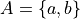
Then

Warning
We can define the Power Set of a set A formally by quantifying over all sets in the Sample Space (Universal Set) and imposing the condition we only look at subsets of a given set A
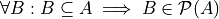
In English, “for all B, if B is a subset of A, then B belongs to the Power Set of A”
Counting Principles#
Motivation#
Suppose you live in the aptly named Town A and are planing a road trip to the similarly uninspired Town C. You plan on stopping at Town B to fill up your gas tank before proceeding to Town C.
Suppose further there are two routes from Town A to Town B, and there are three routes from Town B to Town C. Let us call the routes from Town A to Town B a 1 and a 2, respectively. Let us call the routes from Town B to Town C b 1, b 2, and b 3, respectively. This setup is depicted in the following diagram,

How many different routes can you take from Town A to Town C, by way of Town B?
Before toggling the solution below, try and figure out the answer by drawing arrows from Town A to Town B, and then from Town B to Town C that represent the possible routes you can take and then count up each distinct route. In other worlds, generate a Sample Space for this “experiment”.
Solution
We start by breaking down the problem into the choices we are making at each stage of the road trip. Starting in Town A, we have two possible routes from which we can choose to get to Town B. Once we arrive in Town B, regardless of the route we took to get there, we then have three possible routes to choose from that lead from Town B to Town C. To put it a different way, for each route from Town A to Town B, there are three routes from Town B to Town C.
Each choice represents a branch. Every time we make a choice, we are narrowing down the set of possible outcomes. With that in mind, we can represent each choice as a branch in a tree, as in the following diagram,

The number of possible routes is equal to the number of endpoints in this graph. In this case, there are 6 possible routes we can take, where each route is represented by a particular branch of the tree. These types of graphs are called tree diagrams, for this reason. They are very useful for visualizing the sample spaces of experiments that are composed of successive, independent choices, as in this example.
We may also see the solution by enumerating every possible choice in list_notation,
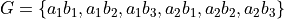

The Fundamental Counting Principle#
We now generalize the example in the previous section into the Counting Principle in three steps: first, we give an intuitive explanation fo the Counting Principle, then we state it in propositional form using the language of Set Theory and finally, we state it entirely symbolically.
Heuristic
If the object E may be chosen in n ways, and thereafter the object F may be chosen in m ways, E and F may be chosen, in that order,
ways.
Proposition
Let the sets E and F have cardinalities n and m, respectively. Let G be the set of sequences xy formed by first selecting an element x from E and then an element y from F. If these two conditions are met, then the cardinality of G is
Note
Careful!
The element  is not the product of x and y, i.e the number x times the number y. It is a sequence of the characters xy.
is not the product of x and y, i.e the number x times the number y. It is a sequence of the characters xy.
This becomes more obvious if we let 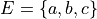 and  ; then G is the set of sequences
; then G is the set of sequences  .
.
Take note that 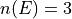,  , so therefore 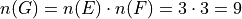
, so therefore 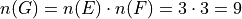
Before stating the Counting Principle formally, we will take a look at one more example.
Example
You are trying to figure out what to outfit to wear. In your closet, you have a red, green, blue and orange shirt. In your dresser, you have a pair of blue jeans, a pair of khakis and a pair of sweat pants. How many possible choices do you have for your outfit?
Solution
We have two sets in this problem: the set of shirts in our closet, and the set of pants in our dresser.

The outfits we can pick are formed by first picking a shirt from the set of shirts, and then picking a pair of pants from the set of pants. The first set contains four elements and the second set contains three elements. Therefore, by the Counting Principle, the total number of outfits is the product of the two cardinalities, 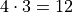.
Warning
We state the hypothesis and conclusion of the Counting Principle in precise symbols below,
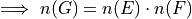


Tree Diagrams#
TODO
Generalized Counting Principle#
TODO
Corollaries#
Before stating the first important corollary that follows from the Generalized Counting Principle, we look at an instructive example.
- Example
A pizza shop lets their customers make any kind of pizza they want from the following ingredients: pepperoni, sausage, green peppers, mushrooms and onions.
How many different pizzas can you order from this restaurant? Try listing out every possible sequence of toppings a customer could order.
Note
This example can be rephrased in a more general way using the language of Set Theory: how many subsets can be formed from the set A?
In other words, what is the cardinality of the Power Set of A, 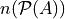?
Solution
Let A represent the set of pizza topping,
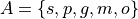
where s = sausage, p = pepperoni, g = green peppers, m = mushroom and o = onions.
Notice the customer ordering pizza does not have to include every topping nor does the customer have to include any topping, if they so choose. For example, one customer might get a pepperoni, mushrooms and onions pizza (corresponding to the set 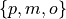), while another customer might get a sausage, green peppers, mushrooms and onions pizza (corresponding to the set  ), while another still might get a pizza with no toppings at all (corresponding to the empty set
), while another still might get a pizza with no toppings at all (corresponding to the empty set  ).
).
The choices being made in this problem consist of whether or not to include each ingredient. There are five ingredients, therefore there are five choices. For each ingredient and therefore for each choice, we have two options: include it or exclude it.
Letting i represent inclusion and e represent exclusion, the set of options for each topping is given by


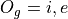

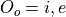
Where O:sub:s is the set options available for sausage, O:sub:p is the set of options available for pepperoni, etc.
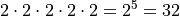
Notice the power of 2 on the left hand side of the equation is equal to the cardinality of A,  .
.
This leads directly to the first corollary of Combinatorics.
- Power Set Theorem
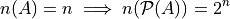
Permutations#
- Permutation
An r-element permutation of n things is an ordered selection or arrangement of r of them.
Motivation#
Three friends, Aletheia, Bertha and Cornelius, are running a foot race to determine who is the fastest. As a diligent statistician, rather than participate in the festitivities, you decide to turn bookie and take bets from your other friends on who is going to win the race. In order to assign odds to each outcome, you first have to know how many ways the race can finish.
Well, my fellow statistician, how many ways can this race between Aletheia, Bertha and Cornelius finish? Before toggling the solution below, try and figure out the answer by listing each possible outcome and then totaling the number of results.
Solution The key to understanding this problem is to recognize the *order* in which these three friends finish the race matters. If we let *a* represent Aletheia finishing the race, *b* represent Bertha finishing the race and *c* represent Cornelius finishing the face, we can enumerate the possible outcomes of the race as *permutations* of the sequence *abc*,
abc acb bac bca cab cab
For example, abc represents the outcome of Alethia finishing first, Bertha second and Cornelius third, whereas cab would represent Cornelius finishing first, Bertha finishing second and Alethia finishing third, etc. From this we see there are 6 ways to permute the sequence abc.
By applying the Generalized Counting Principle, we can arrive at the same solution through another means. In the race, there are three positions to fill (1 st Place, 2 nd Place, 3 rd Place). According to the counting principle, the number of ways to pick how the race will end is equal to the number of ways to pick 1 st Place, times the number of ways to pick 2 nd Place, times the number of ways to pick 3 rd Place.
However, the choice we make for 1 st Place affects the choice we make for 2 nd Place, and the choice we make for 2 nd Place affects the choice we make for 3 rd Place. In other words, if Aletheia comes in 1 st Place, she is unable to also come in 2 nd or 3 rd place. By selecting someone to fill one place, we remove the possibility of them filling any of the other places in the sequence.
This can be visualized through a modified tree diagram, where subsequent branches in the tree diagram are affected by the value of the current branch,

Notice at each step of the diagram, a choice is lost, representing the selection of an individual to fill the given position along the given branch. This type of selection is called selection without replacement.
By counting up the endpoints of the graph, the answer is again found to be there are 6 ways to finish the race.
This can be rephrased with the new terminology introduced in this section: there are 6 permutations of 3 objects taken 3 at time.
Example
Solution
TODO
Formula#
TODO
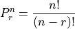
Combinations#
- Combination
An r-element combination of n things is an unordered selection of r of them.
Motivation#
The same three friends from the permutation section, Aletheia, Bertha and Cornelius, have tossed their sneakers aside and decided their talents would be better served enriching the school culture. They each put their names into the running for Prom Committee. Unfortunately, there are only two open positions on the committee. How many ways can these open positions be filled by the three friends?
Solution
TODO
Example
Formula#

 is another notation you will often encounter for combinations of n objects taken r at a time..
is another notation you will often encounter for combinations of n objects taken r at a time..
Example
In Maryland’s lottery, players pick six different (natural) numbers between 1 and 49, order of selection being irrelevant. The lottery commission then randomly selects six of these as the winning numbers. A player wins the grand prize if all six numbers that he or she has selected match the winning numbers. He or she wins the second prize if exactly five match, and the third prize if exactly four of the six numbers chosen match with the winning ones. Find the probability that a certain choice of a bettor wins the grand prize, the second prize and the third prize.
Solution Let **Z** represent the event of selecting all six winning numbers. Let **Y** represent the event of selecting five winning numbers. Let **X** represent the event of selecting four winning numbers.
The Classical Definition of Probability states,
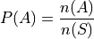
In the context of the given problem, this translates to,
P(Z) = (# of ways to match a 6-element sequence with 6 elements) / (# of 6-element sequences)
P(Y) = (# of ways to match a 6-element sequence with 5 elements) / (# of 6-element sequences)
P(X) = (# of ways to match a 6-element sequence with 4 elements) / (# of 6-element sequences)
In order to calculate the desired probability, each calculation requires the total number of 6-element sequences, where each element of the sequence is an integer between 1 and 49. Furthermore, the selection of one element in the sequence removes it from the pool of possible selections. In other words, there can be no repetitions of any of the integers between 1 and 49 in any sequence of winning numbers. For instance the sequence 15 15 37 42 32 27 is not allowed, because 15 occurs twice. This is what is meant by the phrase “pick six different integers”. This is an example of selection without replacement.
TODO
Notice first there is only one to select all six of the winning numbers. If, for instance, the lottery commission selected the numbers
10 11 12 13 14 15
It does not matter if you chose the numbers in a different order, as in the following combination,
14 13 11 15 10 12
Your choice is still considered matching; That is what is meant in the example by the phrase “order of selection being irrelevant”. Therefore the probability of selecting all six winning numbers is simply,

The Connection Between Permutations and Combinations#
Combined Permutations#
Let O be the set of objects,

and consider all the two-element permutations that can be formed from this set, that is to say, all the possible ways two objects can be selected from this set, where the order of elements is important,
ab ac bc ba ca cb
If the condition that order is important is removed, then the permutation ab and ba are considered the same combination. Likewise for ac and ca, and then again for bc and cb. The number of distinct sequences becomes,
ab ac bc

Permuted Combinations#
Suppose now a similar set of objects P is given as,

and all two-element combinations (not permutations) are required, that is to say, all the possible ways two objects can be selected from this set, where order is important. Careful enumeration of every possibility yields the list of combination as follows,
ab ac ad bc bd cd
TODO